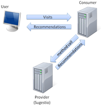
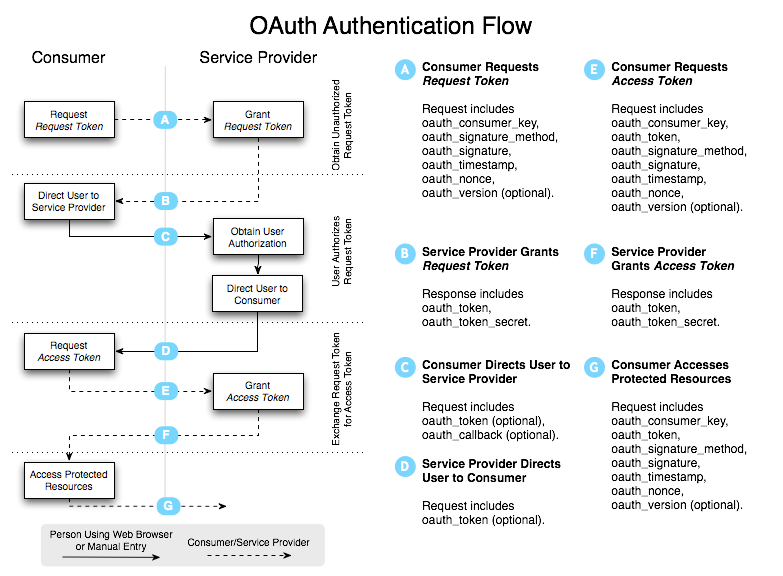
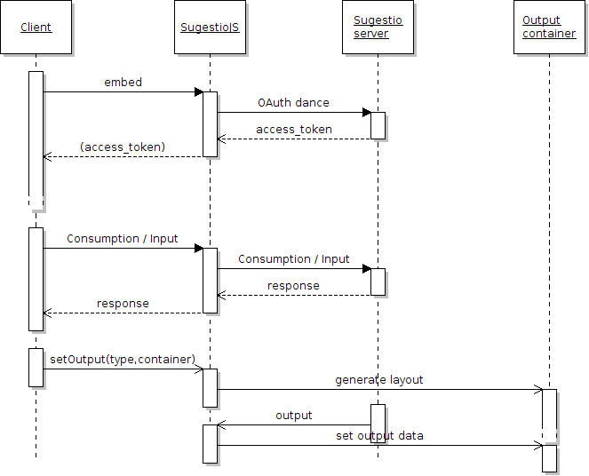

DEPARTEMENT TOEGEPASTE INGENIEURSWETENSCHAPPEN
CAMPUS SCHOONMEERSEN - GENT
Uitgebreid voorstel Masterproef Informatica
PDF versie
Datum : 18 december 2010
Naam student : Michiel Gyssels
Algemene informatie :
Naam van het bedrijf : IBBT / Universiteit Gent - INTEC - WiCa
Is er in het bedrijf inhoudelijke en technische begeleiding beschikbaar ? Ja/Nee
Externe promotor(en) : Luc Martens, Toon De Pessemier, Simon Dooms
E-mailadres externe promotor(en):
Simon.Dooms@intec.ugent.be,Toon.DePessemier@intec.ugent.be
Interne promotor : Rudy Stoop
Titel van het project
Studie naar een veilig en fraude ongevoelig framework voor het aanleveren van
gepersonaliseerde web content.
Doelstelling van het project
De doelstel ing van de masterproef is het maken van een veilig en fraude
ongevoelig framework voor het leveren van gepersonaliseerde aanbevelingen.
Bestaande situatie en probleemstelling
Fig. 1: Sugestio
Sugestio (zie figuur 1 en 2) is een krachtig
aanbevelingsplatform gemaakt binnen de onderzoeksgroep
WiCa van Universiteit Gent. Een website kan, door gebruik te
maken van Sugestio, aan zijn bezoekers gepersonaliseerde
aanbevelingen doen. Afhankelijk van het soort website kunnen
zo bepaalde items zoals bv. producten (E-Commerce),
vrienden (sociale netwerksites) of artikelen (blogs of
nieuwssites) uit de catalogus van de website aanbovelen
worden aan de bezoeker.
De waarschijnlijkheid dat die bezoeker aanbevolen items krijgt
die in zijn interessegebied vallen moet zo groot mogelijk zijn.
Hoe beter deze gepersonaliseerde aanbevelingen zijn, hoe meer
tevreden de bezoeker zal zijn over de website. Dit kan zich in het geval van een E-
Commerce website bijvoorbeeld vertalen in meer winst.
Pagina 1 van 7
De ontwikkelaar van de (consumer) website die
gebruik maakt van de Sugestio webservice moet
tevens geen kostbare tijd steken in het eigenhandig
ontwikkelen van complexe aanbevelingsalgoritmen.
De consumer website bespaart op die manier ook op
laadtijd en belasting van zijn server, de Sugestio
service beschikt namelijk over een krachtige cloud
gebaseerde infrastructuur.
De authenticatie van de Sugestio API is beveiligd met
de OAuth1.0a specificatie. OAuth (of Open
Authorization) is een open protocol voor beveiligde API

Fig. 2: Stroming tussen
User, Consumer en Provider
autorisatie via een standaard en een eenvoudige methode User, consumer en
voor zowel desktop- als webapplicaties. De standaardvorm is 3-legged. Daarbij wil een bepaalde
applicatie (de consumer) data gebruiken over zijn bezoeker (de user) van een
service provider (de provider). In deze 3-legged OAuth vorm zal de user gevraagd
worden of hij/zij de gegevens over hem/haar, die de service provider bezit, wilt
delen met de consumer applicatie. Er bestaat ook nog een 2-legged variant, ook
gekend als de signed-fetch variant. Bij deze variant is de consumer gerechtigd om
in de naam van al zijn gebruikers te handelen. De user moet dus niet de consumer
applicatie autoriseren en het wordt dan ook meer gebruikt als authenticatie tussen
de consumer en de service provider. Sugestio gebruikt de 2-legged variant.
Samengevat werkt de 3-legged vorm van OAuth volgens deze stappen (zie figuur
3): 1. Registreren van de consumer bij de provider. Dit zal manueel moeten
gebeuren door de consumer developer. Hierbij krijgt de consumer een
consumer key en een consumer secret. De combinatie van deze 2 noemt men
ook wel het consumer key-paar. De consumer zal deze ergens moeten
opslaan voor gebruik.
2. De consumer kan aan de user vragen of hij gegevens, over de betreffende
user van de service provider, wil delen met de consumer. De consumer zal
dan een OAuth autorisatie (ook wel een OAuth dans genoemd) starten met de
service provider waarbij de consumer enkele OAuth parameters en zijn
consumer key-paar moet meegeven (A). Door middel van het consumer key-
paar weet de service provider welke consumer toegang vraagt tot gegevens
van hem, de consumer wordt dus door dit sleutelpaar geauthenticeerd. Na
deze stap krijgt de consumer een request token terug van de provider (B).
Dit is een random tekenreeks met een private sleutel die als bewijs geldt dat
de consumer momenteel geauthenticeerd is. In de figuur wordt de request
token oauth_token (met zijn secret) genoemd.
3. Indien de consumer geauthenticeerd is door de service provider gebeurt er nu
een redirect naar een pagina van de provider (C). Bij deze redirect moet de
verkregen request token meestal meegegeven worden. Indien dit echter niet
verplicht is door de provider dan verwacht de provider dat de user de request
token manueel invult. Bij deze pagina wordt de user gevraagd of hij de
toestemming wil geven aan die consumer om zijn gegevens die de provider
Pagina 2 van 7
heeft te delen met de consumer. Indien de user nog niet geauthenticeerd was
op de site van de provider moet dit uiteraard eerst nog gebeuren. OAuth
specificeert niet hoe dit moet gebeuren, meestal wordt dit met een gewoon
loginformulier gedaan.
4. Na authenticatie van de gebruiker gebeurt er opnieuw een redirect naar een
pagina van de consumer (D). Als de gebruiker akkoord ging in de vorige stap
is de request token nu geautoriseerd. De consumer kan nu de request token
omwisselen voor een access token (E+F). Deze access token is het
eindproduct van het hele OAuth stappenplan.
5. De consumer heeft nu toegang tot de gegevens van de user die de service
provider heeft en kan deze opvragen door methodes van provider API op te
roepen (G). Bij deze aanvragen moet de consumer de verkregen access token
samen met andere OAuth parameters en zijn consumer key-paar meegeven.

Fig. 3: OAuth authenticatie stroming
Bij de 2-legged variant gebeuren stappen A en B identiek en dan eindigt de dans.
De verkregen request token in termen van 3-legged OAuth is nu de access token
voor de 2-legged variant. Door zijn diensten te beveiligen met deze 2-legged
variant weet Sugestio bij een aanvraag voor zijn diensten dat de zender wel degelijk
een geldige consumer is en geen aanvaller die fraude wil plegen. De user hoeft geen
weet te hebben dat de aanbevelingen gedaan worden door de Sugestio service en
moet dus zeker de consumer niet autoriseren voor de gegevens waarover Sugestio
beschikt.
Er zijn reeds libraries voor Sugestio beschikbaar in Java, PHP, Python en .NET. Deze
implementeren allemaal OAuth, wat opnieuw wat werk bespaart voor de consumer
Pagina 3 van 7
developer. Het probleem dat men ondervindt, is dat klanten nog teveel
integratiewerk in hun website hebben om van de webservice gebruik te maken. Om
Sugestio aan te spreken via een library werkt men met een systeem van hooking.
Dit wil zeggen dat bij aanmaak van een item (bv. een pagina, product of
nieuwsbericht) of bij bepaalde consumpties door de gebruiker (bv. een page view)
de Sugestio library hierop moet inhaken om deze gebeurtenissen te melden aan de
Sugestio webservice.
Voor het verkrijgen van aanbevelingen moet er op dezelfde manier gewerkt worden.
De output die de Sugestio webservice aanbiedt, is verkrijgbaar in de formaten CSV,
JSON of XML. De consumer ontwikkelaar moet deze informatie echter nog parsen en
in zijn systeem invoeren.
Een oplossing hiervoor zou een client-side library zijn die de consumer developer
meer eenvoud maar toch alle functionaliteit en de nodige beveiliging kan aanbieden.
Het beveiligen van een client-side library is echter geen evidente zaak. Dit komt
omdat de client (in ons geval de user) steeds aan de broncode kan, waardoor men
geen code kan afschermen van de gebruiker. Aanvallers kunnen tevens van
bepaalde lekken gebruik kan maken om eigen code te injecteren (Cross-site
scripting).
Gedetailleerde omschrijving van de opdracht
Er wordt eerst een studie gedaan naar de OAuth specificaties en de problemen met
betrekking tot client-side scripting. Er zal onderzoek gebeuren naar mogelijkheden
hoe toch op een veilige manier OAuth gebruikt kan worden met client-side
scripting. Verschil ende oplossingen zullen in een haalbaarheidsstudie kritisch met
elkaar vergeleken worden.
Vervolgens wordt er een proof of concept met de beste oplossing gemaakt in de
vorm van een client-side library voor de Sugestio API. Deze library moet op een
eenvoudige manier de webservice integreren met de consumer website.
De library zal in JavaScript ontwikkeld worden. Andere mogelijkheden zijn bv.
Jscript, VBScript of PerlScript. JavaScript geniet echter veel meer ondersteuning
door browsers en hosts.
In Figuur 4 is een voorbeeld afgebeeld van de verwachte stroom tussen client en de
library. De consumer website moet eerst de Sugestio JavaScript library (SugestioJS)
in zijn website opnemen (embedden). Hierna zal de library de 2-legged OAuth dans
uitvoeren en de verkregen access token bijhouden tijdens de sessie.
De consumer kan nu consumpties of gegevens doorsturen via de library naar de
Sugestio webservice. De consumer kan de library ook aanbevelingen laten
genereren in een html-element (de output container).
Pagina 4 van 7

Fig. 4: Verwachte stroming tussen consumer, library en Sugestio
Problemen die moeten opgelost worden
De OAuth1.0a specificatie is in zijn standaardvorm moeilijk veilig te gebruiken met
enkel en al een client-side scripting. Dit komt omdat de consumer het private
consumer key-paar moet opslaan en meegeven tijdens een OAuth dans, bij de
stappen A, E en G van figuur 3. Als dit paar publiek wordt, kan een aanvaller zich
gemakkelijk authenticeren als de consumer en dus methodeaanroepen naar de
webservice vervalsen.
Indien het consumer-key paar opgeslagen wordt aan de client-side zijn deze steeds
zichtbaar voor bezoekers. Het volstaat voor die bezoeker om bv. de html-broncode
te bekijken. Ook de code uiterst ingewikkeld maken (obfuscaten) biedt geen
oplossing aangezien men nog altijd reverse engineering kan toepassen. Hier zal een
oplossing voor moeten worden gevonden om het gebruik van OAuth toch mogelijk
te maken.
Wegens beveiligingsredenen is JavaScript onderhevig aan het same origin policy.
Het same origin policy verbiedt een JS script de toegang aan de meeste methodes
en attributen van een andere pagina op een ander domein. Aangezien de Sugestio
een RESTful webservice is wil en we voor de Sugestio JavaScript library Ajax
gebruiken om methodes van de webservice aan te roepen. De XmlHttpRequest API
is helaas ook onderhevig aan de same origin policy. Hierdoor kan de consumer
website die de SugestioJS library gebruikt geen XmlHttpRequests uitvoeren naar de
Sugestio webservice aangezien de consumer website zich op een ander domein
bevindt dan de Sugestio webservice.
Pagina 5 van 7
Technologieën die aan bod komen
JavaScript, HTML, CSS, OAuth, PHP, Java, beveiliging
Ondanks het feit dat JavaScript al lang bestaat, is het nog steeds een sterk
groeiende taal. Vroeger werd het omschreven als ‘s werelds meest misbegrepen
programmeertaal omdat men het vaak als een onvolwaardige OO-taal beschouwde
(Crockford,2001). Het biedt echter wel OO-principes als overerving, compositie en
private variabelen aan en het ondersteunt daarbij ook alle belangrijke design
patterns (Diaz & Harmes, 2008). Door zijn beperkte syntax, functional scoping en
het gebruik van closures is het echter allemaal minder voor de hand liggend dan bij
programmeertalen zoals Java en C++.
Sinds de komst van AJAX, de mobiele revolutie en populaire libraries als jQuery en
YUI zien meer en meer programmeurs de sterktes van JavaScript in en is het sterk
geëvolueerd naar een professioneler karakter.
JavaScript biedt zo de mogelijkheid aan om vele taken, die vroeger steevast aan de
server-side gedaan werden, naar de client-side te brengen. Dit zorgt voor een grote
verbetering van schaalbaarheid en snelheid van de applicaties.
Mogelijke uitbreidingen en opties
- We kunnen nooit verwachten een beveiligingsmethode vol edig waterdicht is.
Daardoor zullen we, indien er nog voldoende tijd over is, ook nog
fraudedetectie moeten ontwikkelen. De fraudedetectie voor Sugestio kan men
opsplitsen in 2 verschillende situaties:
- Fraudedetectie bij onbeveiligde REST calls van de client naar de Sugestio
- Fraudedetectie bij beveiligde REST calls door abnormaal gedrag op te
sporen, dat zich mogelijk nog kan voordoen bij het toepassen van een webservice.
beveiligde oplossing.
Fraudedetectie is onmogelijk aan de client-side en zal dus aan de kant van de
Sugestio server moeten gebeuren.
Vernieuwende aspecten
Voor het integreren van aanbevelingen in websites bestaan tegenwoordig al heel
wat mogelijkheden. Deze werken echter al emaal onbeveiligd zonder enige vorm
van authenticatie. Daardoor zijn deze services niet fraudeongevoelig, een aanvaller
kan bv. gemakkelijk de aanbevelingen manipuleren door zelf aanroepen naar die
webservices na te maken.
Pagina 6 van 7
Overzicht van de items die in de scriptietekst zullen behandeld worden
- Inleiding
- Beschrijving van Sugestio
- Probleemstelling
- Literatuurstudie over OAuth
- Mogelijke oplossingen van het probleem
- haalbaarheidstudie
- suggesties voor fraudedetectie specifiek per oplossing
- Uitwerken van de usecases
- Ontwikkeling van de Sugestio JavaScript Library
- Uitgewerkte fraudedetectie (uitbreiding)
- Testen
Referenties
Pagina 7 van 7
{kind=link}